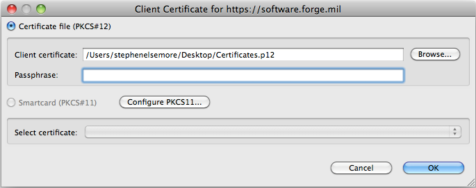

To start working with your TeamForge projects within
-
In the CollabNet Sites view, click the Add
CollabNet Site icon.

The Add CollabNet Site wizard opens. - In the Add a CollabNet Site dialog, select CollabNet TeamForge for the site type and click Next.
- Enter the URL for the site. For example, https://forge.collab.net/
- Provide a description and click Next.
-
Enter the user name for your TeamForge account.
Note: Even if you are using a client certificate for authorization, it is important that you provide your actual user name here. The user name you enter is used as the selection criteria for the built-in "Assigned to me" and "Submitted by me" queries.
-
Specify the kind of client authorization required to connect to the TeamForge server.
- If you are not using a client certificate, select Basic and enter your password for the site.
- Otherwise, select Certificate.
The certificate selection dialog appears. Here's an example.
Depending on whether you want to use a certificate file or a smartcard for authorization, do one of the following:- Select Certificate file (PKCS#12), and provide a Client certificate file and passphrase.
- Select Smartcard (PKCS#11) and select a certificate from the dropdown.
- Select a timezone for the TeamForge server.
-
Select which projects you want to see in the CollabNet
Sites view once you've added your site.
- All projects on the site
- Only the projects in which you're a member
- The projects which you specify as favorites
- Click Finish.
Your TeamForge site appears in the
CollabNet Sites view. You can expand it to see the projects and
application folders in each project.